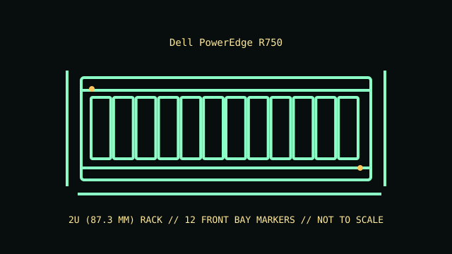

[ MODEL IDENTIFICATION // POWEREDGE R750 // 15TH-GENERATION 2U SERVER ]
Dell PowerEdge R750
2U (87.3 mm); 86.8 × 482 mm (H × W); technical-guide depth is 700.7 mm without bezel to rear wall and 736.3 mm with bezel to PSU handle. Rails and cable-management projection are additional.

REVISION CAVEAT: The 2.5-inch and 3.5-inch bay counts are alternate front-chassis configurations. Mid/rear storage and GPU options are constrained by the selected risers, backplanes and cooling kit.
Specifications & fit
| Catalog subcategory | Rack server enclosures |
|---|---|
| Model / board and backplane | Dell PowerEdge R750 proprietary dual-socket system board. Front and optional rear/mid drive backplanes are configuration-specific and connect to supported PERC/SAS/SATA/NVMe storage controllers. |
| Rack height / dimensions / rails | 2U (87.3 mm); 87.3 × 482 × approximately 772 mm (H × W × D) for chassis without rail/cable-management projection; depth changes with front/rear drive options and bezel. Measure the installed unit. ReadyRails II sliding or static rail options; optional cable-management arm and bezel affect depth. Verify rack type, post spacing and service clearance using the selected rail kit documentation. |
| Power supply | Dual redundant hot-plug PSU bays with Dell AC/DC options; supported wattages depend on build and can include 800 W through 2400 W AC classes. PSU type and rating must match system load and inlet. |
| Drive bays | Chassis options include up to 24 × 2.5-inch or 12 × 3.5-inch hot-plug front bays; optional mid/rear bays depend on the selected chassis/backplane and may reduce other expansion options. |
| Expansion / risers | Up to eight PCIe Gen4 slots across supported riser layouts; number of full-height/full-length positions and GPU support depend on processor, riser and thermal configuration. |
| Cooling | Redundant hot-plug system fans, with standard or high-performance fan assemblies required according to processor, storage, GPU and inlet temperature. |
| Compatibility | R750-specific system board, riser set, air shroud, drive backplanes and high-capacity PSU. Component fit and PCIe lane routing vary with CPU and riser population; do not infer R750xa compatibility. |
| Revision identification | The 2.5-inch and 3.5-inch bay counts are alternate front-chassis configurations. Mid/rear storage and GPU options are constrained by the selected risers, backplanes and cooling kit. |
Compatibility & preservation notes
R750-specific system board, riser set, air shroud, drive backplanes and high-capacity PSU. Component fit and PCIe lane routing vary with CPU and riser population; do not infer R750xa compatibility.
ReadyRails II sliding or static rail options; optional cable-management arm and bezel affect depth. Verify rack type, post spacing and service clearance using the selected rail kit documentation. Always use the correct lifting procedure for the complete installed unit and disconnect power before service.
- Record the full model/product number, serial label, board and backplane identifiers, installed risers, PSU labels and rail-kit part number before disassembly.
- For rack servers, verify exact generation, bay/backplane, controller, riser, fan and PSU compatibility; equal rack height does not establish parts compatibility.
- Keep drive carriers, blanks, shrouds, brackets and fasteners labeled with their original chassis and position. Measure the complete chassis, rails and cable arm before rack installation.
Manufacturer manuals & product specifications
- Dell PowerEdge R750 Technical GuideManufacturer documentation for this exact model family; verify the machine/product number and document revision.
- Dell Support — PowerEdge R750 manuals and documentsManufacturer documentation for this exact model family; verify the machine/product number and document revision.
Published dimensions and option maxima vary by build. Check the specific product number and measure the specimen before restoration, shipping or installation.